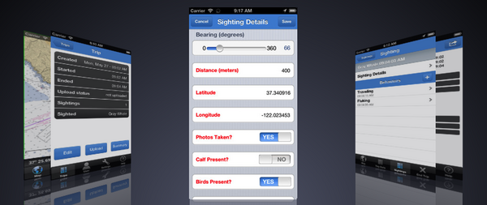
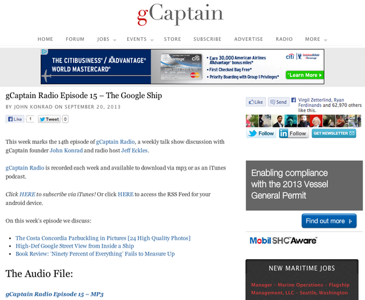
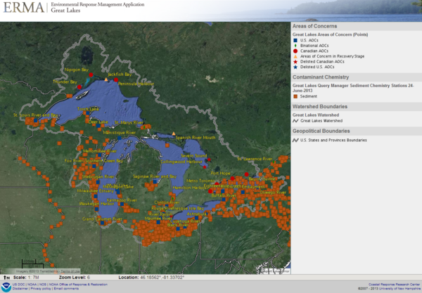
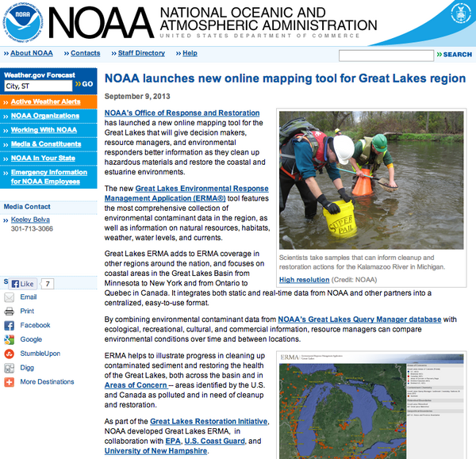

09.26.2013 14:19
Whale Spotter app
It's great to see more interesting
marine convervation apps come out. Just recently, Whale Spotter got
a lot of attention for the San Francisco area.
Whale Spotter on Apple app store
Conserve.IO - Point Blue Conservation Science - NOAA Gulf of the Farallones - NOAA Cordell Bank
Whale Spotter on Apple app store
Conserve.IO - Point Blue Conservation Science - NOAA Gulf of the Farallones - NOAA Cordell Bank

09.23.2013 09:38
gCaptain radio - Google StreetView on the R/V Falkor
Thanks to gCaptain for their gCaptain Radio
Episode 15 - The Google Ship on gCaptain
Radio.
Episode 15 mp3
Episode 15 mp3

09.10.2013 12:01
Great Lakes ERMA
Congrats to Aaron Racicot, Michele J.
and the rest of the ERMA team. So awesome to see something I worked
on years ago keep growing without me. My current roll is only to
kick the NAIS feed occasionally and interact with the USCG about
NAIS issues.
NOAA launches new online mapping tool for Great Lakes region
NOAA launches new online mapping tool for Great Lakes region
... Great Lakes ERMA adds to ERMA coverage in other regions around the nation, and focuses on coastal areas in the Great Lakes Basin from Minnesota to New York and from Ontario to Quebec in Canada. It integrates both static and real-time data from NOAA and other partners into a centralized, easy-to-use format. By combining environmental contaminant data from NOAA's Great Lakes Query Manager database with ecological, recreational, cultural, and commercial information, resource managers can compare environmental conditions over time and between locations. ERMA helps to illustrate progress in cleaning up contaminated sediment and restoring the health of the Great Lakes, both across the basin and in Areas of Concern -- areas identified by the U.S. and Canada as polluted and in need of cleanup and restoration. As part of the Great Lakes Restoration Initiative, NOAA developed Great Lakes ERMA, in collaboration with EPA, U.S. Coast Guard, and University of New Hampshire. ...


09.08.2013 15:34
The return of puppet
I have a long term goal of automating
more of my machine setup notes. I do a lot to new machines and I
rarely get to where I think I should be. For example, what makes
the best ntp setup? And do I have emacs24 in my new Ubuntu 12.04
LTS virtual machine?
I missed out on going to the 2013 PuppetConf in San Francisco, but the conference just posted videos of the talks. I just watched Getting Started with Puppet. The talk doesn't really match what I would like to see in a getting started, but it's still great.
I fired up a brand new and used some of what is in the above talk:
Next up on my "to watch" list: Puppet, now with Google! by Marc Cohen & Eric Johnson from Google.
Sadly, I don't see Mac OSX listed in the supported platforms for the ntp module:
Puppet Labs' ntp on puppet forge
I missed out on going to the 2013 PuppetConf in San Francisco, but the conference just posted videos of the talks. I just watched Getting Started with Puppet. The talk doesn't really match what I would like to see in a getting started, but it's still great.
I fired up a brand new and used some of what is in the above talk:
sudo add-apt-repository ppa:cassou/emacs
sudo apt-get install emacs24 emacs24-el emacs24-common-non-dfsg
sudo apt-get install puppet
sudo apt-get install puppet-el
puppet resource user schwehr
user { 'schwehr':
ensure => 'present',
comment => 'Kurt Schwehr,,,',
gid => '1000',
groups => ['adm', 'cdrom', 'sudo', 'dip', 'plugdev', 'lpadmin', 'sambashare'],
home => '/home/schwehr',
shell => '/bin/bash',
uid => '1000',
}
puppet resource package emacs24
package { 'emacs24':
ensure => '24.3+1-1.1~ppa1~precise1',
}
puppet describe cron
puppet describe user
puppet describe group
sudo pupet apply -e 'package { "figlet": ensure => installed }' --noop --debug
The (partial) results from the "noop" command at the end of the
above:
debug: Puppet::Type::Package::ProviderFink: file /sw/bin/fink does not exist
debug: Creating default schedules
debug: /File[/var/lib/puppet/ssl/public_keys]: Autorequiring File[/var/lib/puppet/ssl]
debug: Finishing transaction 69921012759640
debug: Loaded state in 0.00 seconds
debug: Executing '/etc/puppet/etckeeper-commit-pre'
debug: Loaded state in 0.00 seconds
info: Applying configuration version '1378668951'
debug: Prefetching apt resources for package
debug: Executing '/usr/bin/dpkg-query -W --showformat '${Status} ${Package} ${Version}\n''
debug: Puppet::Type::Package::ProviderApt: Executing '/usr/bin/dpkg-query -W --showformat '${Status} ${Package} ${Version}\n''
debug: Puppet::Type::Package::ProviderApt: Executing '/usr/bin/dpkg-query -W --showformat ${Status} ${Package} ${Version}\n figlet'
notice: /Stage[main]//Package[figlet]/ensure: current_value purged, should be present (noop)
debug: /Stage[main]//Package[figlet]: The container Class[Main] will propagate my refresh event
debug: /Schedule[weekly]: Skipping device resources because running on a host
debug: /Schedule[puppet]: Skipping device resources because running on a host
notice: Class[Main]: Would have triggered 'refresh' from 1 events
debug: Class[Main]: The container Stage[main] will propagate my refresh event
notice: Stage[main]: Would have triggered 'refresh' from 1 events
debug: Finishing transaction 69921012931820
debug: Storing state
debug: Stored state in 0.00 seconds
notice: Finished catalog run in 0.21 seconds
debug: Executing '/etc/puppet/etckeeper-commit-post'
debug: Finishing transaction 69921011598240
debug: Received report to process from ubuntu.localdomain
debug: Processing report from ubuntu.localdomain with processor Puppet::Reports::Store
The most exciting thing? I see fink in there!Next up on my "to watch" list: Puppet, now with Google! by Marc Cohen & Eric Johnson from Google.
Sadly, I don't see Mac OSX listed in the supported platforms for the ntp module:
Puppet Labs' ntp on puppet forge
09.05.2013 16:37
R/V Falkor in Google Street View
View Larger Map
View Larger Map
View Larger Map
View Larger Map
View Larger Map
Related posts:
Google Offers First Street View from Inside a Ship, by Mike Schuler, gCaptain
First view inside of a ship in Google Street View, By Peio Elissalde, GeoGarage
Onboard R/V Falkor, the Google "See Inside" way, Ben Ellison, Panbo SAILfeed
Related links:
Schmidt Ocean Institute G+ page
SOI Place Page in Google (Note that SOI != SIO)
09.03.2013 09:38
global AIS videos
Credits: These visualizations were
done using global AIS data collected from satellites provided
courtesy of SpaceQuest and
Analyze Corp. The visualizations are a collaboration
between Brendan Kenny, Paul Saxman, Francesc Campoy, Mano Marks,
SpaceQuest, Analyze Corp and myself.
The first two videos are from just before Strata 2012 (Santa Clara). They use one day of data in the Google Maps API. Heat map of one day:
Vector version of one day:
This one is from just before Google I/O this year. This is a D3 histogram and WebGL rendering of ship position reports over a range of days. Those are rendered in a Google Maps API canvas.
See my prior post on Google IO for the full presentations at Google I/O. The Strata talk was not recorded.
The first two videos are from just before Strata 2012 (Santa Clara). They use one day of data in the Google Maps API. Heat map of one day:
Vector version of one day:
This one is from just before Google I/O this year. This is a D3 histogram and WebGL rendering of ship position reports over a range of days. Those are rendered in a Google Maps API canvas.
See my prior post on Google IO for the full presentations at Google I/O. The Strata talk was not recorded.